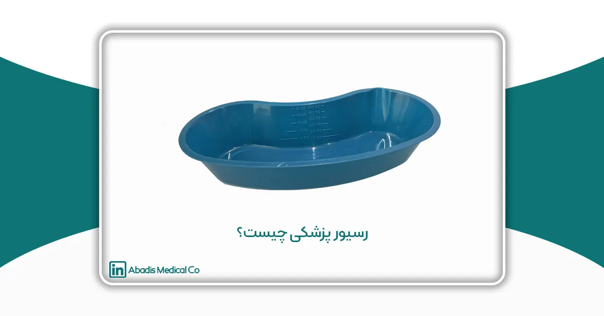
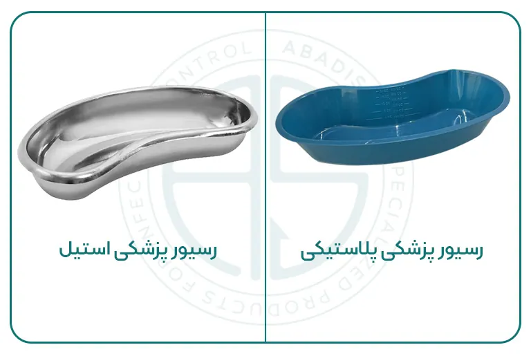

مقدمه
در محیطهای پزشکی،اعم از مراکز درمانی و بیمارستانها،دندانپزشکیها و خانه سالمندان رسیور پزشکی نقش حیاتی و کاربردی دارد. از رسیور پزشکی آبادیس جهت نگهداری از تجهیزات پزشکی و جراحی مانند پنس و قیچی و نگهداری نمونههای به دست آمده،ترشحات جمع آوری شده از بیماران و شستوشو یا ضدعفونی کننده ابزار جراحی استفاده میشود.
در این مقاله به بررسی رسیور پزشکی،طراحی، کاربردها و اهمیت آن در مراقبتهای بهداشتی پرداخته شده است.
رسیور پزشکی (Kidney Dish, Emesis Basin) چیست؟
رسیور پزشکی، که در برخی موارد به عنوان ظرف استفراغ (Emesis Basin) هم شناخته میشود، یک ظرف کم عمق و به شکل کلیه است که اساساً برای نگهداری و جمعآوری مایعات، بافتها یا وسایل پزشکی در طول روندهای پزشکی استفاده میشود. این ظرف نام خود (Kidney Dish) را از شباهت شکلی آن با کلیه انسان گرفته است.
رسیور پزشکی به عنوان ظرفی برای استفراغ یا ترشحات دهانی بیماران طراحی شده است؛ و همچنین برای نگهداری و حمل ابزار جراحی و پزشکی، پانسمانهای کثیف و سایر زبالههای پزشکی و برای شستشو وسایل پزشکی در طی جراحی استفاده می شود.
در گذشته، رسیور پزشکی از جنس فولاد ضد زنگ مانند استیل ساخته میشد؛ و در اوایل قرن بیستم رسیور پزشکی معمولا از آهن لعابی ساخته می شد. اما امروزه رسیورهای پزشکی آبادیس اغلب از پلاستیک های مقاوم ساخته میشوند و جایگزین رسیور پزشکی چندبار مصرف شد؛ تا از نظر استفاده، تمیز کردن و دور انداختن آسانتر باشند.
محصولات یکبار مصرف آبادیس در صنعت پزشکی میتوانند انتقال پاتوژنها و عوامل بیماریزا را به صورت چشمگیری کاهش دهند.
سالانه بیش از ۱۰ میلیون رسیور پزشکی یکبار مصرف در بیمارستانها و مراکز درمانی مورد استفاده قرار میگیرد.
رسیور های پزشکی چندبارمصرف که از جنس فولاد ضد زنگ هستند؛ قابلیت ضدعفونی و اتوکلاو دارند و برای ضدعفونی ابزارهای جراحی و جمعآوری ترشحات بیماران قابل استفاده هستند.
رسیورهای پزشکی یکبارمصرف آبادیس که از پلاستیک های مقاوم ساخته میشوند؛ بلافاصله پس از استفاده دور انداخته میشوند، از این رو برای آماده سازی تزریق مناسب هستند و کاربرد محدودی دارند.
طراحی و ویژگی های رسیور پزشکی
- کلیه شکل: طراحی رسیور پزشکی به شکل منحنی ارگونومیک، سبب تسهیل در نگهداری و منتقل کردن ابزارهای پزشکی و جلوگیری از انتشار ترشحات، مایعات و پسماند عفونی به محیط اطراف می گردد.
- عمق کم: این ویژگی کمک میکند تا از ریختن مایعات جلوگیری شود؛ در حالی که فضای کافی برای مایعات یا وسایل پزشکی را فراهم میآورد.
انواع رسیور پزشکی
- رسیور پزشکی فلزی یا استیل: رسیور پزشکی استیل اغلب از جنس فولاد ضد زنگ است. رسیور های پزشکی استیل بادوام، قابل استریل با اتوکلاو و مقاوم در برابر زنگ زدگی هستند.
ویژگیها: این ظرفها معمولاً دارای سطح صاف و لبههای گرد هستند که تمیز کردن و استریل آنها را آسان میکند.
- رسیور پزشکی پلاستیکی: رسیور پزشکی پلاستیکی آبادیس از پلاستیکهایی مانند پلی پروپیلن یا پلیاتیلن ساخته میشوند. این ظرفها سبک، قابل دور انداختن و اقتصادی هستند. این ظروف مانند رسیور پزشکی استیل قابل اتوکلاو هستند.
مزایا: ظرفهای پلاستیکی برای کاربردهای یکبار مصرف مناسب هستند و خطر انتقال عفونت بین بیماران را کاهش میدهند. رسیور پلاستیکی آبادیس مقاوم در برابر اکثر اسیدها و حلالهای رایج آزمایشگاهی می باشد. همچنین در رنگهای مختلفی در دسترس هستند که تشخیص و مرتبسازی آنها را آسان میکند.

کاربردهای رسیور پزشکی
رسیور پزشکی آبادیس یک ابزار چندکاره و ضروری در محیطهای پزشکی است. طراحی و عملکرد منحصر به فرد آن، آن را برای طیف وسیعی از کاربردها در محیطهای بالینی و جراحی مناسب میسازد. در اینجا به برخی از کاربردهای اصلی آن میپردازیم:
-
اقدامات جراحی
- جمعآوری نمونهگیری: در طول عمل های جراحی، برای جمعآوری بافت های خارج شده از بدن بیماران جهت نمونه برداری استفاده میشود.
- نگهداری ابزارها: به عنوان یک سینی مناسب برای نگهداری ابزارهای جراحی استفاده می شود و دسترسی تیم جراحی به آنها را آسان میکند.
-
مراقبت از زخم
- تمیز کردن و تعویض پانسمانها: برای جمعآوری مایعات در هنگام تمیز کردن زخمها یا تعویض پانسمانها استفاده میشود، و از ایجاد آلودگی و آلودگی محیط اطراف جلوگیری مینماید.
- دبریدمان: در فرآیند برداشتن بافتهای مرده یا عفونی از زخم، رسیور پزشکی میتواند مواد برداشته شده را به طور ایمن جمعآوری کند.
-
مراقبت از بیمار
- جمعآوری ترشحات دهانی: گاهی برای جمعآوری استفراغ استفاده میشود، به ویژه در محیطهای عفونی از انتشار عفونت جلوگیری مینماید.
- بهداشت دهان: در طی روشهای مراقبت دهان، مانند شستشوی دهان، برای جمعآوری مایعات خارج شده استفاده میشود.
-
رویههای تشخیصی
- اندازهگیری مایعات: در روشهایی که نیاز به اندازهگیری دقیق مایعات دارند، رسیور پزشکی آبادیس میتواند به عنوان یک ظرف موقت قبل از انتقال به یک دستگاه اندازهگیری درجهبندی شده عمل کند.
-
رویهها و مداخلات پزشکی
- آمادهسازی تزریق: میتوان از آن برای سازماندهی و آمادهسازی سرنگها، ویالها و سایر مواد مرتبط با تزریق استفاده کرد و آنها را در دسترس قرار داد.
- رویههای جراحی کوچک: در روشهای جراحی کوچک یا تهاجمی، رسیور پزشکی آبادیس، ابزارها و مواد مورد نیاز را نگه میدارد و جریان کار را تسهیل میکند.
-
مراقبتهای اضطراری و صحرایی
- کمکهای اولیه: در مواقع اضطراری یا مراقبتهای صحرایی، رسیور یک وسیله قابل حمل برای نگهداری ابزارها، جمعآوری مایعات و حتی مخلوط کردن محلولها در صورت نیاز فراهم میکند.
- استفاده در آمبولانس: برای تیمهای آمبولانس، رسیور به عنوان ابزاری مناسب برای جمعآوری مایعات یا نگهداری ابزارها در حین حرکت عمل میکند.
مزایای استفاده از رسیور پزشکی
- قابلیت حمل: سبک و آسان برای استفاده، رسیور پزشکی برای استفاده در محیطهای پزشکی مختلف مناسب هستند.
- بهداشتی بودن: نسخههای یکبار مصرف به کنترل عفونت کمک میکنند و خطر آلودگی متقابل را به حداقل میرسانند.
- چندکاربردی بودن: مناسب برای طیف گستردهای از کاربردها، از جراحیهای بزرگ تا مراقبتهای روزانه از بیمار.
مکانهای استفاده از رسیور پزشکی
رسیور های پزشکی آبادیس ابزارهای چند منظورهای هستند که در محیطهای پزشکی مختلف استفاده میشوند. در اینجا برخی از مکانها و موقعیتهای معمول که از آنها استفاده میشود آورده شده است:
بیمارستانها
- اتاقهای جراحی: برای جمعآوری خون، مایعات بدن و بافتها در طول عملهای جراحی استفاده میشوند. همچنین برای نگهداری ابزارهای جراحی و اسفنجها استفاده میشوند.
- بخش اورژانس: برای جمعآوری استفراغ، تمیز کردن زخمها و نگهداری لوازم پزشکی در طول مراقبتهای اورژانسی استفاده میشوند.
- اتاقهای بیماران: برای جمعآوری مایعات بدن و ترشحات دهانی مانند ادرار یا خلط، نگهداری لوازم بهداشت شخصی و کمک به وظایف مراقبت از بیمار مانند بهداشت دهان و تمیز کردن زخمها استفاده میشوند.
درمانگاهها و مراکز جراحی
- برای نگهداری ابزارها و جمعآوری مایعات در طول جراحیهای کوچک و فرآیندها استفاده میشوند.
- آزمایش های تشخیصی: برای جمعآوری نمونههای مایعات بدن برای تحلیل آزمایشگاهی استفاده میشوند.
مطبهای دندانپزشکی
- جراحی دندانپزشکی: برای جمعآوری مایعات، نگهداری ابزارهای دندانپزشکی و مدیریت بهداشت بیمار در طول فرآیندها استفاده میشوند.
- معاینات دندانپزشکی: برای شستشو و جمعآوری بزاق یا مایعات دیگر در طول معاینات و تمیز کردن دندانها استفاده میشوند.
کلینیکهای دامپزشکی
- جراحیهای حیوانات: به طور مشابه با بیمارستانها برای جمعآوری مایعات و نگهداری ابزارهای جراحی استفاده میشوند.
- مراقبت از حیوانات: برای جمعآوری نمونهها و مدیریت بهداشت در طول فرآیندهای مراقبت از حیوانات استفاده میشوند.
آمبولانسها و خدمات فوریتهای پزشکی
- مراقبت در حرکت: برای جمعآوری استفراغ، نگهداری ابزارهای پزشکی و مدیریت مایعات در طول حمل و نقل استفاده میشوند.
- کمکهای اولیه: برای تمیز کردن زخمها و ارائه مراقبتهای فوری در موقعیتهای اضطراری استفاده میشوند.
مراقبتهای خانگی
- مراقبت از سالمندان و افراد معلول: برای مدیریت بهداشت شخصی، مانند شستن و پانسمان زخمها استفاده میشوند. برای جمعآوری مایعات بدن و مدیریت وظایف مراقبتی در محیط خانه استفاده میشوند.
خانههای سالمندان
- مراقبت: برای تمیز کردن زخمها، جمعآوری مایعات بدن و کمک به بهداشت بیمار استفاده میشوند.
- پاسخ به شرایط اضطراری: در موقعیتهای مراقبت اضطراری برای مدیریت مایعات و نگهداری لوازم پزشکی استفاده میشوند.
بیمارستانهای صحرایی و مراکز پزشکی نظامی مراقبتهای جنگی
- در بیمارستانهای صحرایی برای مدیریت زخمها،جمعآوری مایعات و نگهداری لوازم پزشکی در طول عملیات نظامی استفاده میشوند.
- پاسخ به بلایای طبیعی: برای مراقبتهای اضطراری و مدیریت مایعات در مناطق بحرانزده استفاده میشوند.
کلینیکهای سیار و برنامههای سلامت اجتماعی برنامههای بهداشت اجتماعی
- در کلینیکهای سیار و برنامههای اجتماعی برای مدیریت مراقبت از بیماران و بهداشت در مناطق محروم استفاده میشوند.
مراکز مراقبتهای تخصصی
- در واحدهایی مانند مراکز سوختگی یا واحدهای مراقبت ویژه (ICU)، رسیورهای پزشکی نقش مهمی در مدیریت مراقبت از بیمار دارند.
جمع بندی
رسیورهای پزشکی آبادیس به عنوان ابزاری چندکاره و ضروری در محیطهای مختلف پزشکی، از بیمارستانها تا خانههای سالمندان، نقش مهمی ایفا میکنند. طراحی ارگونومیک و مواد مقاوم آنها، همراه با قابلیت استفاده یکبار مصرف یا چندبار مصرف، این ابزارها را به انتخابی ایدهآل برای جمعآوری مایعات، نگهداری ابزارهای پزشکی، و مدیریت بهداشت در روندهای مختلف پزشکی تبدیل کرده است.
استفاده گسترده از رسیورهای پزشکی آبادیس در جراحیها، مراقبت از زخمها، اقدامات دندانپزشکی، و حتی در محیطهای دامپزشکی نشاندهنده تطبیقپذیری و کارایی بالای این ابزارهاست. نسخههای یکبار مصرف آنها بهویژه در کاهش خطر انتقال عفونت و بهبود ایمنی بیمار بسیار مؤثر است.
بهطور کلی، رسیورهای پزشکی به عنوان یکی از اجزای مهم در تجهیزات پزشکی، با طراحی هوشمندانه و کاربردهای گسترده، نقش کلیدی در ارتقاء بهداشت و بهبود فرآیندهای درمانی ایفا میکنند.